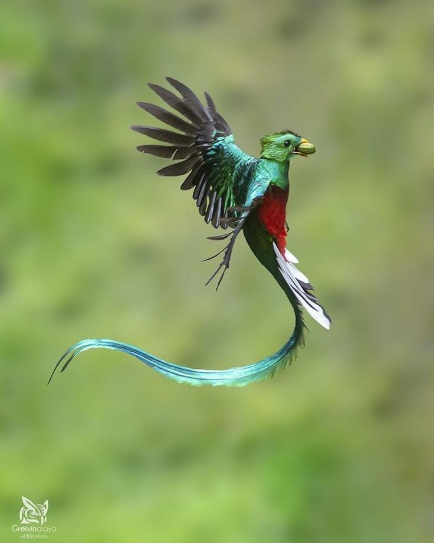

Naturaleza
Naturaleza
Ballena jorobada
Migran al Golfo Dulce entre julio y noviembre.
 Naturaleza
Naturaleza
Orquídeas
Más de 1,400 especies diferentes en la zona.

Naturaleza
Quetzal
Ave sagrada de los mayas que habita los bosques nubosos.
 Naturaleza
Naturaleza
Mono ardilla
Especie endémica del Pacífico sur costarricense.